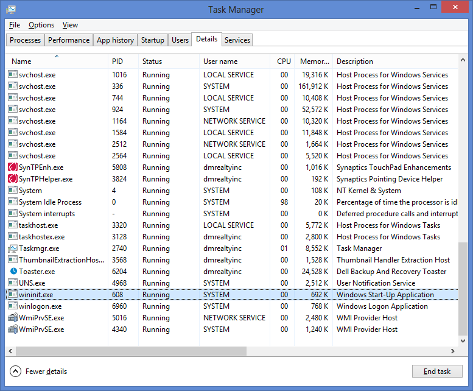

Section I Pre-OS Software
JD: For pre-OS software, I was expecting the software in action, and not just their files. With these files being on the boot drive, you aren't guaranteed that the true pre-OS software that runs really is loaded from the files that you see.
Mac OS X
Ubuntu
Ubuntu boot files shown below.
Windows
Windows boot files shown below.

Section II Kernel File(s)
Mac OS X
Ubuntu
Ubuntu kernal files shown below.
JD: Nope, you are in /usr/src here. This is the kernel's source code and not the actual kernel that is loaded at boot time.
Windows
Windows kernal files shown below.
JD: These are libraries that the kernel may use, but not the actual kernel file itself.
Section III Startup Scripts
Mac OS X
Ubuntu
Ubuntu startup config files shown below.
Windows
Windows places its startup scripts, a.k.a configuration files, in a system called the Windows Registry.
The Windows Registry is a hierarchical database that stores configuration settings and options on Microsoft Windows operating systems. It contains settings for low-level operating system components and for applications running on the platform that have opted to use the registry. The kernel, device drivers, services, SAM, user interface and third party applications can all make use of the registry. The registry also provides a means to access counters for profiling system performance.
Here is where you can find the files ...

And here is the utility windows provides for manipulating these files
Section IV The First Process
Mac OS X
Ubuntu
The first process in the Ubuntu kernel is /sbin/usr best described by its
man page, shown below.
The process can be seen running using the ps command with the --pid
flag to target the process, and the -F flag for full detail formating.
Windows
Similarly for windows the first process is wininit.exe. Below is a
screenshot of the task manager with the wininit.exe process highlighted.
JD: If wininit.exe were truly the first process, then why is its process ID 608? The first true process is the one with the lowest process ID.

Section V Network Settings
Mac OS X
Ubuntu
Disclaimer: I am using GNOME 3! This is actually not so relevant to the Linux distribution, but rather the OS GUI package.
GNOME 3 features a simple settings panel with a subsection for network settings, shown below.

Windows
The network settings for windows are split into two main subsections. The first shown below is the Network and Sharing Center. This controls networks setting such as sharing permissions and local network settings.

The second sections is the explorer window showing the physical network adapters. Here we can select wifi networks to connect to, or just total disable our adapters. All in all this screen is where the user will find settings pertaining the the network hardware.